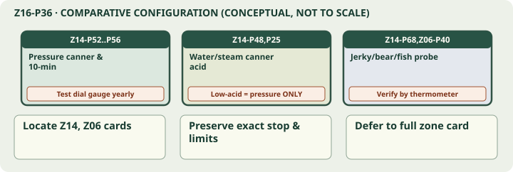

Z16-P36 · Field reference atlas · New manuscript
Home Food Preservation Equipment: Canners, Gauges and Thermometers Index
Locate the original encyclopedia cards for home Food Preservation Equipment: Canners, Gauges and Thermometers Index.
When it applies · Offline reference lookup. The linked chapter defines the situation, audience and limits.
Equipment · Offline reader or the complete linked source cards in print.

Actions
- Open Z14-P37 for verify safe minimum internal cooking temperatures with a calibrated thermometer; Z14-P54 for operate a pressure canner cleanly: 10-minute steam vent and target PSI.[A10, F03, P07]
- Open Z14-P55 for test dial-gauge pressure canners annually and know weighted-gauge steps; Z14-P58 for depressurize pressure canners naturally and cool jars undisturbed 12 to 24 hours.[A10, P07]
- Read the linked card’s applicability, equipment and stop conditions together. Keep review and source limitations attached to any excerpt.[A10, ED]
Failure recognition · Acting on a keyword or title while overlooking an upstream exception or stop condition.[A10, ED]
Verify · Confirm the exact page ID and read the full conditions before using the reference.[A10, ED]
Stop or change course · If the situation falls outside a linked card’s conditions or its stop rule applies, stop using this index as a decision aid. Follow the full card and current local directions.[A10, ED]
Evidence and editorial notes
- A10 · FEMA / Ready.gov · Make a Plan (current web edition)
- Section: Offline reader navigation, historical lineage, and HOLD transparency · Conditions: Using the complete 16-zone offline archive, zone readers, and print proofs
Support: Navigation aids expose draft status, reconstruction lineage, open diagnostic photo needs, and pending specialist holds on every lookup path.
Limitations: This index entry does not independently establish any safety, regulatory or diagnostic instruction. · Conflicting evidence: None noted.
Editorial note: Index design and cross-reference policy. Substantive directions come from linked upstream chapter claims. · Specialist reviewer: Accessibility, print QA, and editorial reviewer
Primary source · checked 2026-11-24 - F03 · USDA / FDA / CDC · Four Steps to Food Safety (current web edition)
- Section: Chill > Refrigerate promptly · Conditions: Perishable food outside temperature control
Support: Refrigerate within two hours, or within one hour above 90°F.
Limitations: Ambient temperature spikes shorten safe holding windows. · Conflicting evidence: None; retained for food safety pack completeness.
Editorial note: Maintains five-pack integrity. · Specialist reviewer: Food safety and public health
Primary source · checked 2026-11-24 - P07 · USDA / NCHFP · How to Use Boiling Water and Pressure Canners (Current web edition)
- Section: Using Pressure Canners; venting; operating at elevation; pressure interruption · Conditions: Validated USDA/NCHFP low-acid process, listed equipment, actual elevation
Support: Vent continuously for ten minutes before pressurizing. Select the tested product, gauge, altitude, pressure and time combination. If pressure drops below target, restore it and restart the full process time.
Limitations: No generic pressure schedule or guarantee. Confirm dial-gauge accuracy according to the reference and obtain Extension guidance on deviations. · Conflicting evidence: See A02 claim audit for boundaries.
Editorial note: Core low-acid botulism-prevention boundary in Z14. · Specialist reviewer: Food microbiology and Extension preservation specialist
Primary source · checked 2026-11-25
Source lineage · New manuscript (Z16 P20 equipment index) · Classification · New manuscript.